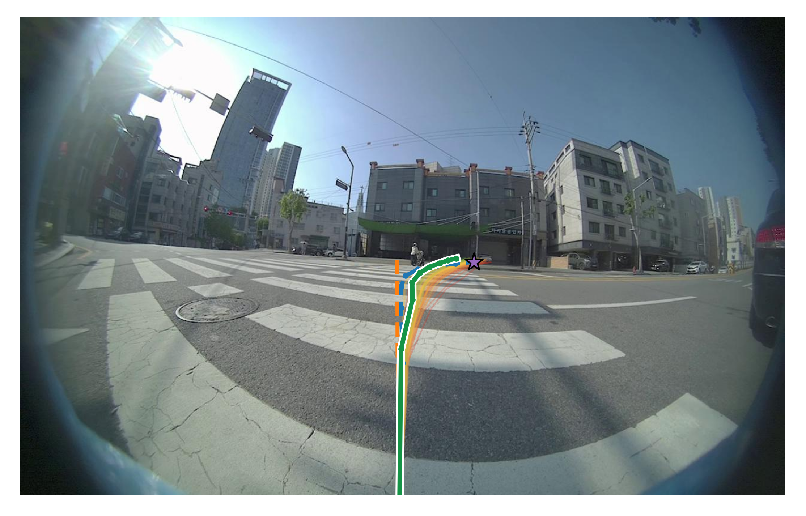

Taming an End-to-End Autonomous Driving Policy for Urban Navigation of Quadruped Robots
IROS Workshop on AI Meets Autonomy, 2026
We present Go2-DrivoR, a goal-conditioned adaptation of the end-to-end autonomous driving planner DrivoR for urban quadrupedal navigation. Trained exclusively on TartanGround simulation data, it improves goal-conditioned planning on unseen simulated environments and transfers zero-shot to open-loop real-world Unitree Go2 trajectory prediction.
@inproceedings{kim2026taming,
title = {Taming an End-to-End Autonomous Driving Policy for Urban Navigation of Quadruped Robots},
author = {Kim, Joochan and Yang, Chanuk and You, Tackgeun and Wang, Ziran and Lim, Hwasup},
booktitle = {IROS Workshop on AI Meets Autonomy},
year = {2026}
}